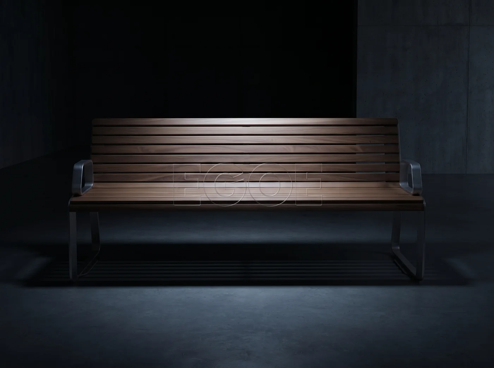
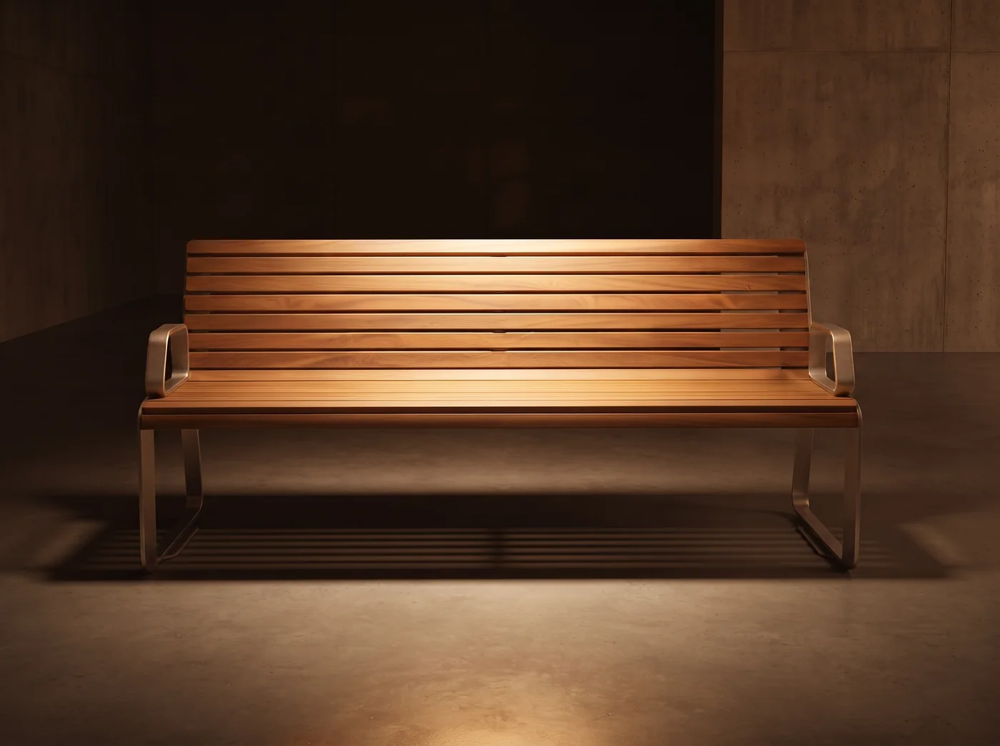
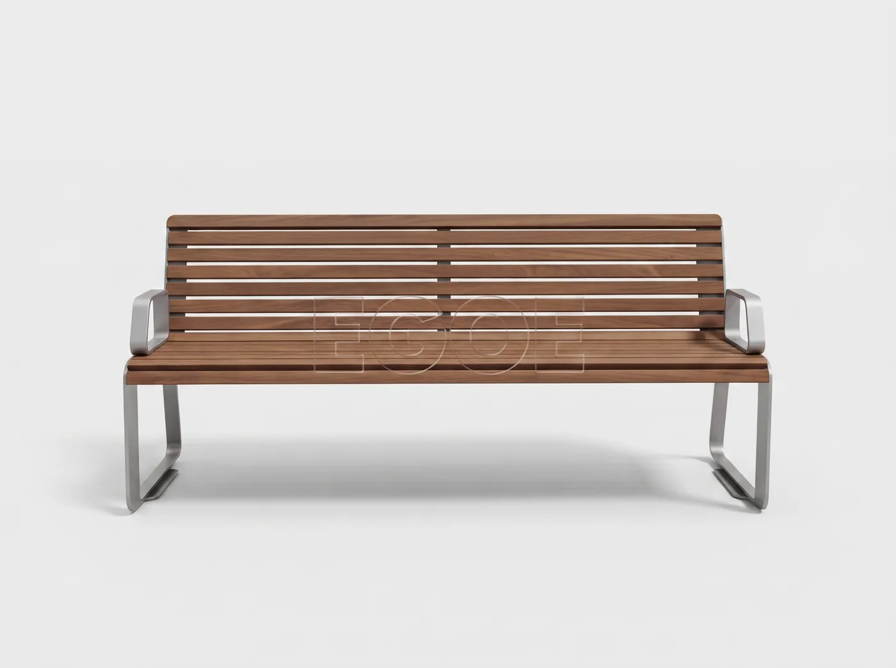

По умолчанию карточка тёмная, приглушённая. При наведении (на телефоне — при свайпе / прокрутке) она мягко «загорается» и переходит на светлый кадр. Ниже — три пары перехода и три стиля анимации. Выбери, что нравится.
Тёмный кадр «загорается» тёплым светом и уступает место светлому.


Тёмный→Жёлтыйнаведи · свайп

Тёмный→Белыйнаведи · свайп
Жёлтый→Белыйнаведи · свайп
Как это будет в каталоге
В сетке товаров МАФ каждая карточка по умолчанию показывает тёмный, приглушённый кадр — сетка выглядит спокойной и графичной. Наводишь курсор — товар «выходит на свет» и показывает детальный светлый кадр. На мобильном тот же переход срабатывает при прокрутке карточки к центру экрана или по тапу.
Здесь показаны 3 сочетания на одной скамейке, чтобы сравнить контраст «до/после». Стиль анимации переключается кнопками сверху. Скажи, какая пара и какой стиль — внедрю на каталог.